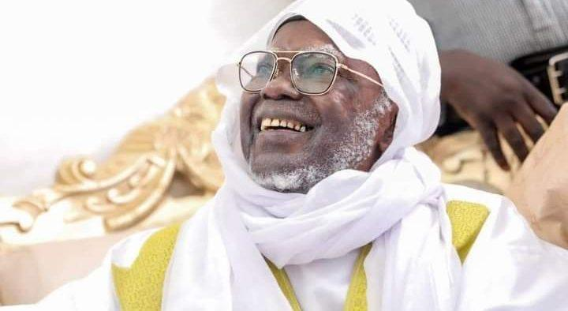

L'Histoire de Touba
Les differents Khalifs du Mouridisme
Du Premier Khalife Serigne Moustapha Mbacké à l’actuel Khalife Serigne Mountakha Mbacké, 8 Khalifes généraux se sont succédés pour perpétuer le legs du vénéré guide du Mouridisme qui a quitté ce bas monde en 1927
CHEIKH MOUHAMADOU MOUSTAPHA MBACKE (1927-1945): L’exemple du rassembleur
Premier Khalife de Cheikh Ahmadou Bamba, Mouhamadou Moustapha Mbacké ; fils de Cheikh Ahmadou Bamba et de Sokhna Aminata Lo ; est né le 17 septembre 1888 à Darou Salam. Après des humanités auprès de Serigne Ndame Abdou Rahmane Lo, compagnon du fondateur du mouridisme, Mame Thierno Birahim Mbacké, frère cadet du Cheikh, et enfin de son père, il se distingua très tôt par son dévouement. Lorsque le Cheikh Ahmadou Bamba fut rappelé à Dieu en 1927, il s’illustra d’abord, malgré les moyens de transport quasi inexistants, à transférer avec une grande discrétion le Saint homme à sa derniére demeure de Touba. Mais aussi en jouant le rôle de père et rassembleur de la grande famille du Cheikh. A l’instar de son Père, il a créé pour eux des daaras, véritables pôles de développement où, en dehors de l’enseignement du Coran et de la liturgie, le travail productif est érigé au rang de véritable sacerdoce. C’est ainsi que, pour doter les Cheikhs, il eut à fonder de nombreux villages dont on peut, pour mémoire, citer quelques-uns des plus connus : Tindody, Taïf , Naïdé, Darou Naïm, Kaél, Bayla. La plus grande réussite de Cheikh Mouhammadou Moustapha est sans doute la construction de la Grande Mosquée de Touba, recommandation majeure de Cheikh Ahmadou Bamba. Pour les besoins de sa construction, le premier Khalife de Serigne Touba avait réussi la construction du chemin de fer reliant Diourbel à Touba afin de faciliter le transport des matériaux lourds et pour désenclaver la capitale du mouridisme fondé en 1888. Le père de Serigne Cheikh Mbacké «Gaindé Fatma» quittera ce bas monde en 1945.
CHEIKH MOUHAMMADOU FADILOU MBACKE (1945-1968) : Le charismatique guide
Cadet (de six mois) de Serigne Mouhamadou Fadilou, Cheikh Mouhamadou Fadilou a vu le jour, le 27 du mois de Rajab, à Darou Salam, en 1889. L’un des faits marquants de sa biographie restera sans doute cet attachement à Cheikh Ahmadou Bamba qui s’est manifesté lors d’une rencontre avec le guide. « Je ne suis ni le père, ni le frère, ni l’oncle d’aucun d’entre vous. Je suis une créature vouée au service exclusif de Dieu. Ceux d’entre vous qui auront choisi d’accompagner sur ce chemin que j’ai réhabilité, ceux-là sont mes fils, neveux, frères et talibés », avait lancé Cheikh Ahmadou Bamba. Serigne Fallou avait aussitôt fait un acte d’allégeance qu’il déclinera ensuite en ces termes : « Notre espoir est en Toi, Toi qui nous as ouvert les portes de la félicité. Je Te vends mon rang de fils pour acquérir la gloire d’être Ton talibé. » En 1945, Serigne Fallou, devenu second khalife, plongea corps et âme dans la poursuite des travaux de la Grande Mosquée dont l’inauguration sera effectuée le 7 Juin 1963. Le guide religieux a surtout réussi à donner une grande dimension au Magal de Touba en demandant à toute la communauté mouride de se rendre dans la cité religieuse pour célébrer à l’unisson le Grand Magal de 1948. Le Charismatique guide a été rappelé à Dieu en 1968 après 23 ans de règne. Le Magal du Kazou Rajab qui lui est dédié est encore célébré chaque année par la communauté mouride et reste l’un des plus grands événements religieux de Touba.
CHEIKH ABDOUL AHAD MBACKE : (1968-1989) La rigueur du bâtisseur
Cheikh Abdoul Ahad est né en 1914 à Diourbel. La naissance de ce premier enfant de l’après exil a suscité, selon la tradition, une vive émotion de la part du Cheikh qui lui prédit un destin hors du commun. A sa naissance, le troisième Khalife Général des Mourides, Cheikh Ahmadou Bamba, prenant à témoin ses plus proches disciples déclara : « Priez pour lui afin qu’Allah lui accorde longue vie car, en lui, je place un espoir immense. Le fils de Sokhna Maryama Diakhaté et frère aîné de Serigne Chouhaïbou entama ses humanités coraniques sous la conduite de son oncle et érudit Serigne Hamzatou Diakhaté ». Agriculteur émérite, il s’est investi dans ses exploitations de Touba Bélel, de Bokk Barga, de Kadd Balooji, de Mbara Dieng. Il a exercé le métier de commerçant cependant, sans jamais encaisser de ses clients plus qu’il ne lui est dû. Il s’est même essayé au transport en commun. Quand, le 6 août 1968, Serigne Fallou retourne à son Créateur, Cheikh Abdoul Ahad continue l’œuvre de construction et de modernisation de Touba. Il s’affirma comme un bâtisseur et son Khalifa a surtout rimé avec le développement prodigieux de la cité « Gnakk Caaxaan », pour décliner un autre de ses surnoms, Serigne Abdoul Ahad est considéré comme le bâtisseur ou l’homme de la transformation de la cité religieuse. En quelques années, Touba sera en chantier avec un plan de circulation en période de Magal, son lotissement, l’extension de la Grande mosquée, l’approvisionnement en eau, sans compter d’importants travaux de la Grande Mosquée, une Bibliothèque équipée qui compte des ouvrages du monde musulman et des écrits du Mouridisme.
CHEIKH ABDOU KHADR MBACKE : (1989-1990) «L’imam des imams»
Cheikh Abdoul Khadre est né un 3ème jour du mois de Muharram de l’an en 1914 au village de Ndame. Il reçut à l’âge de 5 ans sa première formation coranique auprès de Serigne Abdou Rahmane Lô à Ndame (Dar Alimou Kabir). Mais, c’est à Guédé, à quelques kilomètres de Touba, qu’il achève sa formation dans le domaine des sciences islamiques. Celui que l ’ancien imam Ratib de Dakar, El Hadji Maodo Sylla, avait surnommé «imam des imams» , a pris le relais de Serigne Fallou en dirigeant la prière de vendredi à la grande mosquée. Serigne Abdou Khadr Mbacké, appelé aussi « Boroom Bakhdaad » , dirigeait les offices religieux et procédait lui-même à la prière sur les morts aussi souvent qu’il le pouvait. Il accéda au Khalifa en 1989. Il aura vécu un séjour terrestre de 75 ans. Exactement comme son père. Il est le père de Serigne Bass Abdou Khadre, l’actuel porte-parole de la communauté mouride.
CHEIKH SALIOU MBACKE (1990-2007): L’ascète
C‘est à Diourbel que Serigne Saliou est venu au monde, le 22 septembre 1915. Le cinquième Khalife des Mourides a mémorisé le Coran auprès de son oncle maternel Serigne Alassane Diakhaté. Dès son accession aux fonctions de Khalife en 1990, après le bref magistère de Serigne Abdou Khadr, Serigne Saliou prend les rênes du Khalifa. A l’instar de son père, Serigne Saliou affiche sa détermination dans le sens de la défense de l’Islam et l’héritage de Cheikh Ahmadou Bamba. La vie de Cheikh Saliou a été surtout associée à des moments d’ascétisme, d’actes de dévotion, de détachement aux affaires mondaines et surtout au culte du travail. Sous son magistère, il développa d’importants projets agricoles, des enseignements religieux. Il entreprit les travaux de rénovation de la mosquée de Touba et poursuivit avec succès les travaux déjà entamés par son prédécesseur, Abdoul Ahad Mbacké. Il a été rappelé à Dieu en 2007.
CHEIKH MOUHAMMADOU LAMINE BARA MBACKE (2007-2010) : Au nom des pères fondateurs
Fils du vénéré Serigne Fallilou Mbacké, Serigne Mouhammadou Lamine Bara Mbacké a vu le jour à Touba en 1925 et a été le sixième Khalife général des Mourides après le rappel à Dieu de Cheikh Saliou Mbacké, le 28 décembre 2007. L’histoire retiendra qu’il a été le premier des petits-fils de Serigne Touba à avoir assuré les charges de Khalife de toute la communauté mouride. Appelé affectueusement El Hadji Bara, il est l’homonyme de Serigne Mouhamadou Lamine Bara Mbacké, fils de Cheikh Ahmadou Bamba car il est venu au monde pendant que ce dernier était en visite chez Mouhammadou Fadilou Mbacké. Son père le confia très tôt à son homonyme. Après avoir acquis de solides connaissances en sciences religieuses, il retourna auprès de son père pour continuer sa formation spirituelle. Très tôt attaché au service de son père il a eu à jouer des rôles divers comme chargé de mission ou homme de confiance dans beaucoup de tâches. Très proche de Serigne Saliou Mbacké et très lié à Serigne Abdou Khadre Mbacké qu’il accompagnait chaque fois diriger les prières du vendredi à la grande mosquée de Touba, Serigne Mouhammadou Lamine Bara Mbacké a également eu à jouer un rôle auprès d’Abdoul Ahad Mbacké, Cheikh Abdou Khadre et Serigne Saliou. Il quitta ce bas monde en 2010.
SERIGNE SIDY MOKHTAR MBACKE : (1925-2017) : L’unité de la Ummah en bandoulière
Le 7ème khalife de Serigne Touba, Serigne Sidy Mokhtar Mbacké est né le 25 octobre 1925. C’est son père Mouhamadou Lamine Bara Mbacké qui l’a initié au Coran avant de le confier à Mame Cheikh Awa Balla Mbacké, fils de Mame Thierno Mbacké, à Darou Marnane. Puis, chez Mouhamadou Lamine Diop Dagana, un des proches du fondateur du mouridisme. Serigne Sidy Mokhtar hérite de la charge de Khalife des Mouride en juillet 2010. Il s’est illustré à la tête de la communauté mouride par des travaux importants portant sur l’extension de la Grande Mosquée de Touba et la construction de la Mosquée Massalikoul Jinan de Dakar. Cheikh Sidy Moukhtar Mbacké a été unanimement reconnu comme un artisan inlassable pour l’unité de la Ummah. Sous son magistère, tous les foyers religieux du Sénégal ont parlé d’une même voix. Rappelé à Dieu le 9 janvier 2018, il repose aujourd’hui à Gouye Mbind.
SERIGNE MOUNTAKHA MBACKE : Un magistère placé sous le signe de l’éducation
 Fils de Serigne Mouhamadou Bassirou Mbacké ibn Khadim Rassoul, ( 1895-1966), Serigne Moutakha Mbacké est devenu le 3e petit fils de Cheikh Ahmadou Bamba chargé de poursuivre l’œuvre du fondateur de la Mouridiya. Il succède à Serigne Sidi Moukhtar Mbacké rappelé à Dieu dans la nuit du mardi 9 janvier 2018. Serigne Mountakha Bassirou Mbacké est né en 1933 à Darou Kayel près de Mboul. Educateur, Serigne Mountakha a ouvert le Daara des homonymes de Sokhna Diarra Bousso, mère de Serigne Touba, à Porokhane. Serigne Mountakha Mbacké a été homme de confiance de Serigne Saliou Mbacké, de Serigne Mouhamadou Lamine Bara Mbacké et de Serigne Sidi Mokhtar Mbacké, le 8e nouveau Khalife Général des Mourides a lui placé son magistère sous le signe de l’éducation et de la connaissance qui est quasi obsessionnel chez lui. D’où son projet de création d’une université islamique.